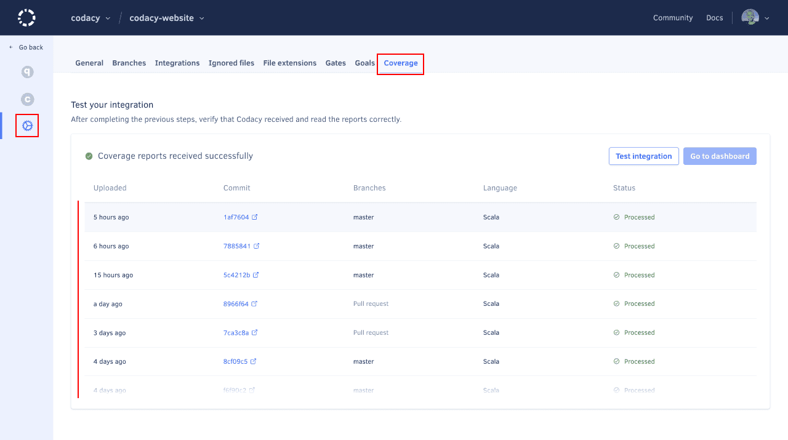

Adding coverage to your repository#
Code coverage is a metric used to describe the degree to which the source code of a program is tested. A program with high code coverage has been more thoroughly tested and has a lower chance of containing software bugs than a program with low code coverage. You can read more about the basics of code coverage on Codacy's blog.
To monitor the code coverage of your repository on Codacy you must generate coverage reports for each commit on your CI/CD workflow, and then upload the coverage data to Codacy.
Complete these main steps to set up coverage for your repository:
-
Generating coverage reports
Ensure that you're generating one of the code coverage report formats supported by Codacy on each push to your repository.
-
Uploading coverage data to Codacy
After each push to your repository, run the Codacy Coverage Reporter to parse your report file and upload the coverage data to Codacy.
-
Validating that the coverage setup is complete
Check if Codacy displays the coverage metrics for new commits and pull requests and troubleshoot the coverage setup if necessary.
The next sections include detailed instructions on how to complete each step of the setup process.
1. Generating coverage reports#
Before setting up Codacy to display code coverage metrics for your repository you must have tests and use tools to generate coverage reports for the source code files in your repository.
Consider the following when generating coverage reports for your repository:
- There are many tools that you can use to generate coverage reports, but you must ensure that the coverage reports are in one of the formats that Codacy supports
- If your repository includes multiple programming languages, you may need to generate a separate coverage report for each language depending on the specific languages and tools that you use
- Make sure that you generate coverage reports that include coverage data for all tested source code files in your repository and not just the files that were changed in each commit
The following table contains example coverage tools that generate reports in formats that Codacy supports:
| Language | Example coverage tools | Report files |
|---|---|---|
| C# | OpenCover | opencover.xml (OpenCover) |
| dotCover CLI | dotcover.xml (dotCover detailedXML) |
|
| Coverlet | Make sure that you output the report files in a supported format using one of the following file names:opencover.xml (OpenCover)cobertura.xml (Cobertura)lcov.info, lcov.dat, *.lcov (LCOV)
|
|
| Go | Golang Code Coverage | Golang report files don't have a specific name. Because of this, later in the setup process you must follow specific instructions while submitting coverage to Codacy. |
| Java | JaCoCo | jacoco*.xml (JaCoCo) |
| Cobertura | cobertura.xml (Cobertura) |
|
| JavaScript | Istanbul Mocha + Blanket.js |
lcov.info, lcov.dat, *.lcov (LCOV) |
| PHP | PHPUnit | coverage-xml/index.xml (PHPUnit XML version <= 4)clover.xml (Clover) |
| Python | Coverage.py | cobertura.xml (Cobertura) |
| Ruby | SimpleCov | cobertura.xml (Cobertura)lcov.info, lcov.dat, *.lcov (LCOV) |
| Scala | sbt-jacoco | jacoco*.xml (JaCoCo) |
| scoverage | cobertura.xml (Cobertura) |
|
| Swift/Objective-C | Xcode Code Coverage | See below how to generate coverage reports with Xcode |
Handling unsupported languages#
If you're generating a report format that Codacy doesn't support yet, contribute with a parser implementation yourself or use one of the community projects below to generate coverage reports in a supported format:
-
SlatherOrg/slather: generate Cobertura reports from Xcode coverage reports:
gem install slather slather coverage -x --output-directory <report-output-dir> --scheme <project-name> <project-name>.xcodeprojThis will generate a file
cobertura.xmlinside the folder<report-output-dir>. -
dariodf/lcov_ex: generate LCOV reports for Elixir projects
- chrisgit/sfdx-plugins_apex_coverage_report: generate LCOV or Cobertura reports from Apex code coverage data
- danielpalme/ReportGenerator: convert between different report formats
Important
Make sure that you specify the language when uploading coverage for an unsupported language.
As a last resort, you can also send the coverage data directly by calling one of the following Codacy API endpoints:
2. Uploading coverage data to Codacy#
After having coverage reports set up for your repository, you must use the Codacy Coverage Reporter to upload them to Codacy. The recommended way to do this is by using a CI/CD platform that automatically runs tests, generates coverage, and then uses the Codacy Coverage Reporter to upload the coverage report information to Codacy.
Important
Please note that Codacy needs to receive coverage data for:
- Every push to your repository including merge commits or any commits created automatically by tools such as Dependabot
- All tested files in your repository including the files that weren't changed in the commit, or files from unchanged modules in a monorepo setup
Alternative ways of running the Codacy Coverage Reporter
Codacy makes available alternative ways to run the Codacy Coverage Reporter, such as by installing the binary manually or by using Docker, a GitHub Action, or a CircleCI Orb.
However, the instructions on this page assume that you'll run the recommended self-contained bash script get.sh to automatically download and run the most recent version of the Codacy Coverage Reporter.
-
Set up an API token to allow Codacy Coverage Reporter to authenticate on Codacy:
-
If you're setting up coverage for one repository, obtain a project API token and set the following environment variable to specify your project API token:
export CODACY_PROJECT_TOKEN=<your project API token> -
If you're setting up and automating coverage for multiple repositories, obtain an account API Token and set the following environment variables:
-
CODACY_API_TOKEN: Your account API token.
-
CODACY_ORGANIZATION_PROVIDER: Git provider hosting the repository.
Must be one of
gh,ghe,gl,gle,bb, orbbeto specify GitHub, GitHub Enterprise, GitLab, GitLab Enterprise, Bitbucket, or Bitbucket Enterprise, respectively. -
CODACY_USERNAME: Name of your organization on the Git provider, or your username on the Git provider if you're using a personal organization.
-
CODACY_PROJECT_NAME: Name of the repository for which you're uploading the coverage data.
export CODACY_API_TOKEN=<your account API token> export CODACY_ORGANIZATION_PROVIDER=<Git provider hosting the repository> export CODACY_USERNAME=<organization name or username on the Git provider> export CODACY_PROJECT_NAME=<repository name> -
Warning
Never write API tokens to your configuration files and keep your API tokens well protected, as they grant owner permissions to your projects on Codacy
It's a best practice to store API tokens as environment variables. Check the documentation of your CI/CD platform on how to do this.
-
-
If you're using Codacy Self-hosted set the following environment variables to specify your Codacy instance URL and the Codacy Coverage Reporter version that's compatible with Codacy Self-hosted 11.0.0:
export CODACY_API_BASE_URL=<your Codacy instance URL> export CODACY_REPORTER_VERSION=13.13.1 -
Run Codacy Coverage Reporter on the root of the locally checked out branch of your Git repository, specifying the relative path to the coverage report to upload:
bash <(curl -Ls https://coverage.codacy.com/get.sh) report -r <coverage report file name>Check the console output to validate that the Codacy Coverage Reporter detected the correct commit SHA-1 hash and successfully uploaded the coverage data to Codacy. If you need help, check the troubleshooting page for solutions to the most common issues while running the CLI.
Note
Be sure to also check the instructions for more advanced scenarios while uploading the coverage data to Codacy, such as when running parallel tests, using monorepos, or testing source code in multiple or unsupported languages.
3. Validating that the coverage setup is complete#
Codacy displays the code coverage in each branch, as well as the evolution of code coverage between commits and the code coverage variation introduced by pull requests.
Because of this, to ensure that all code coverage metrics are available on Codacy, you must have successfully uploaded coverage data and analyzed:
- The last two commits in each branch
- The common ancestor commit of each pull request branch and its target branch
Example
The example below shows that after pushing a commit that correctly sets up coverage on the default branch:
-
Codacy will report coverage metrics for all subsequent commits and pull requests relative to the default branch.
-
Codacy won't report coverage metrics for commits and pull requests that are relative to older branches where the coverage setup wasn't performed yet.
To solve this issue, you can rebase the old feature branch to update the common ancestor commit to one that already has coverage data.
Follow these instructions to validate that your coverage setup is working correctly:
-
On Codacy, open your Repository Settings, tab Coverage, and observe the list of the most recent 50 coverage reports in the section Test your integration.
Make sure that Codacy receives and processes the coverage data successfully for at least two commits.

If there are commits with a status different from Processed, please follow the troubleshooting instructions for the corresponding error status and click the button Test integration to display any new coverage reports uploaded to Codacy.
Commit not found#
Codacy doesn't have information about the commit associated with the coverage data.
What causes the error? How to fix the error? Codacy didn't receive the webhook for that commit from the Git provider. Wait a few more minutes until Codacy detects the commit and the status will update automatically.
If it takes more than 5 to 10 minutes for Codacy to detect the commit, the webhook call from the Git provider may have been lost. You can wait until you push a new commit or contact support@codacy.com asking us to sync the commits on Codacy with your Git provider.
The commit SHA-1 hash sent while uploading coverage is wrong. Make sure that the Codacy Coverage Reporter detects the correct commit SHA-1 hash for the uploaded coverage data. Branch not enabled#
The commit associated with the coverage data doesn't belong to any branch that Codacy is analyzing.
What causes the error? How to fix the error? Coverage was uploaded for a commit that belongs to a branch that isn't analyzed by Codacy. Make sure that the branch is enabled on Codacy. Alternatively, ensure that the target branch is enabled and open a pull request for Codacy to start analyzing the branch automatically.
If Codacy is already analyzing the branch, make sure that the Codacy Coverage Reporter detects the correct commit SHA-1 hash for the uploaded coverage data.
Coverage was uploaded for a commit that no longer belongs to any branch on the Git repository, for example after a rebase or squash merge. The error status is expected in this scenario and you can ignore it. Commit not analyzed#
Due to technical limitations, Codacy only reports coverage for a commit after successfully completing the static code analysis of that commit.
What causes the error? How to fix the error? Codacy hasn't finished analyzing the commit yet. Wait a few more minutes until Codacy completes the static code analysis for the commit and the status will update automatically. Codacy didn't analyze the commit on a private repository because the commit author isn't a member of the Codacy organization. Make sure that you add all commit authors as members of the Codacy organization. Codacy skipped analyzing the commit because there are more recent commits in the branch. Upload coverage data for the most recent commit in the branch. The setting Run analysis on your build server is on, but your client-side tools didn't upload results to Codacy. Make sure that your client-side tools run successfully and upload the results to Codacy to complete the analysis. Codacy ran into an error while analyzing the commit. Solve the issue that caused the analysis to fail (such as Codacy losing access to the repository), or contact us at support@codacy.com asking for help. Final report not sent#
Codacy is waiting to receive more coverage data before reporting the coverage for a commit.
What causes the error? How to fix the error? Coverage was uploaded with the --partialflag but Codacy didn't receive thefinalnotification.Make sure that after uploading all partial reports you send the finalnotification.Pending#
Codacy is waiting to receive valid coverage data for the files in your repository.
What causes the error? How to fix the error? The file paths in the coverage report don't match the ones on the repository Files page on Codacy. Make sure that the file paths included in your coverage report are relative to the root directory of your repository. For example, src/index.js.The uploaded coverage data only includes information for files that are ignored on Codacy. Check which files are ignored on Codacy and make sure that you're generating coverage reports for the correct files in your repository. The uploaded coverage data is incorrectly associated, using the -loption, to a language that's not present in your repository.Verify that you are associating the correct language, or don't specify a language to let Codacy detect the contents of the coverage reports automatically. See how to upload coverage in advanced scenarios for more information. -
Check that Codacy displays the coverage metrics for the latest commits and pull requests.

If Codacy can't calculate the coverage metrics for pull requests, make sure that you're uploading coverage data for the following commits of the pull request:
Commit Required to calculate the coverage metrics Head commit
of the pull request branchCoverage variation
Diff coverageCommon ancestor commit
of the pull request and target branchesCoverage variation The following diagram highlights the commits that must receive coverage data for Codacy to calculate the coverage metrics for pull requests:

Click View logs on a pull request detail page to see the SHA-1 hashes of the commits that are missing coverage data. If you have many open pull requests, you can also use a script to identify if any pull requests are missing coverage data.
Need help?
If you need help setting up coverage on your repository please contact us at support@codacy.com including the following information:
- URL of your repository on Codacy
- Your CI/CD configuration files and the name of your CI/CD platform
- Full console output of your CI/CD when running the Codacy Coverage Reporter
- Branch name and commit SHA-1 hash corresponding to the CI/CD output
- Test coverage report that you're uploading to Codacy
- Any other relevant information or screenshots of your setup
See also#
Share your feedback
Did this page help you?
Thanks for the feedback! Is there anything else you'd like to tell us about this page?
255 characters left
We're sorry to hear that. Please let us know what we can improve:
255 characters left
Alternatively, you can create a more detailed issue on our GitHub repository.
Thanks for helping improve the Codacy documentation.
Edit this page on GitHub if you notice something wrong or missing.
If you have a question or need help please contact support@codacy.com.